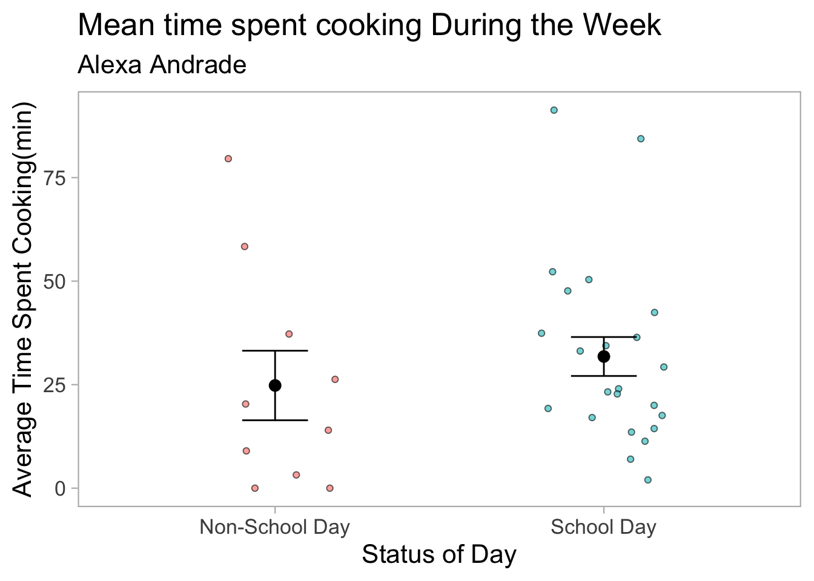

I could take and compare the mean time I spent cooking on school days and non-school days because I tend to more homework and have to attend classes during the week, so I think I would spend more time cookinf during the weekend.
Tip
Try committing and pushing your changes here! Write an _informative_ commit message.
b. Visualization (10 points)
Using the summary you described in part a, **create a visualization of your data comparing your summarized response variable between groups**. If you are calculating a mean or median, show the underlying data in addition to your summary.
Use colors in your figure (that are not the default ggplot settings).
Make sure your axis labels are full, readable text (not just your column names)
Cooking_clean <-read_xlsx(here("Data", "Cooking_timeF.xlsx")) |>clean_names()#Creating a summary Cooking_summary <- Cooking_clean |>group_by(school_day) |>summarise(mean =mean(minutes_spent_cooking_min), # Calculate mean moss heightn =n(), # Count number of observationssd =sd(minutes_spent_cooking_min), # Calculate standard deviationse = sd /sqrt(n), # Calculate standard errorci_lower = mean -qt(0.975, df = n -1) * se, # 95% CI lower boundci_upper = mean +qt(0.975, df = n -1) * se # 95% CI upper bound ) |>mutate(across(c(mean, sd, se, ci_lower, ci_upper), ~round(.x, 1)) # Round values ) |>select(school_day, mean, sd, se, ci_lower, ci_upper) # Select final columns
ggplot(data = Cooking_clean, aes(x = school_day, y = minutes_spent_cooking_min, color = school_day)) +geom_jitter(width =0.2, height =0, alpha =0.6, shape =21, aes(fill = school_day), color ="black") +# Adds raw data points with jittergeom_errorbar(data = Cooking_summary, aes(x = school_day, ymin = mean - se, ymax = mean + se),width =0.2,inherit.aes =FALSE,color ="black") +# Error bars for mean ± SEgeom_point(data = Cooking_summary, aes(x = school_day, y = mean),inherit.aes =FALSE,color ="black", size =3) +# Mean pointslabs(x ="Status of Day", y ="Average Time Spent Cooking(min)", title ="Mean time spent cooking During the Week",subtitle ="Alexa Andrade") +scale_x_discrete(labels =c("N"="Non-School Day", "Y"="School Day")) +scale_color_manual(values =c("Y"="steelblue", "N"="red")) +theme_light(base_size =16) +theme(panel.grid =element_blank(),panel.background =element_rect(fill ="white",color =NA),plot.background =element_rect(fill ="white", color =NA),legend.position ="none")
Warning: No shared levels found between `names(values)` of the manual scale and the
data's colour values.

Note
See [From Data to Viz](https://www.data-to-viz.com/) for new ideas for visualization.
Tip
Try committing and pushing your changes here! Write an _informative_ commit message.
c. Caption (5 points)
Figure 1. Average time spent cooking(min) tends to be higher on School Days. Data collected personally by Alexa Andrade. The points represent observations of daily time spent cooking(min) and are differentiated by whether the observations were taken on school(n=24) or non-school(n=10) days(total n=34). Colors represent the status of the day(red = non-school day, blue = school day). The graph represents the comparison between mean time spent cooking on different types of days, represented by the large black point, ± standard error(SE) bar whiskers between school days and non-school days.]
Tip
Try committing and pushing your changes here! Write an _informative_ commit message.
d. Table presentation (10 points)
Using `gt` or `flextable`, create a table with the same data summary that you describe in part a and visualized in part b. For example, if you described and visualized means, make a table with means. If you need to, round any numbers to one decimal point.
Cooking_summary <- Cooking_summary |>#Renaming the categories in school_day column mutate(school_day =recode(school_day,"N"="Non-School Day","Y"="School Day"))Cooking_summary |>flextable() |>set_header_labels(school_day ="Status of Day",mean ="Mean",sd ="Standard Deviation",se ="Standard Error",ci_lower ="95% CI Lower",ci_upper ="95% CI Upper" ) |>set_caption("Summary Statistics of Cooking Time by School Day") |>autofit()
Status of Day
Mean
Standard Deviation
Standard Error
95% CI Lower
95% CI Upper
Non-School Day
24.8
26.6
8.4
5.8
43.8
School Day
31.8
22.4
4.7
22.1
41.5
Display the output.
Tip
Try _rendering_ your document here! Commit and push your changes, then find the url to your rendered output (if you get stuck, see the video on Canvas and/or the Git/GitHub basics page under the “Resources” tab).
Double check that your rendered document looks the way you would expect (e.g. tables all correct, text is formatted correctly). If not, go back and fix any issues or ask for help.
Problem 2. Affective visualization (24 points)
a. Describe in words what an affective visualization could look like for your personal data (3-5 sentences). (2 points)
For my personal data I was inspired by Jill Pelto’s “Seabirds of Seal Island” data visualization, so I also want to do multiple line graphs. I could have the dates serve as the x-axis of my visualization, and have three overall line trends that represent cooking time on school days, non-school days, and also the amount of ingredients used on each day. I want to set up the backround of my visualization to be a kitchen setting, and I want the peak of the line graphs to be lined up with different shelves that hold different cooking appliances. For the amount of ingredients used trendline, I instead want to line up the peaks and dips to be next to different ingredients.
Tip
Try committing and pushing your changes here! Write an _informative_ commit message.
b. Create a sketch (on paper) of your idea. (2 points)
Include a photo of this sketch in your submission.
Tip
Try committing and pushing your changes here! Write an _informative_ commit message.
Double check your rendered URL to make sure the photo of your sketch shows up.
c. Make a draft of your visualization. (12 points)
Feel free to be creative with this! _You do not have to do this in R._ You could create a sculpture, painting, textile object, etc.
If you are making your visualization in R, show the annotated code and the output.
If you are making your visualization outside of R, include a photo of your visualization in your submission.
Tip
Try committing and pushing your changes here! Write an _informative_ commit message.
If you are including a photo, double check your rendered URL to make sure the photo of your draft shows up.
d. Write an artist statement. (8 points)
An artist statement gives the audience context to understand your work. For each of the following points, write 1-2 sentences to address:
the content of your piece (what are you showing?)
the influences (what did techniques/artists/etc. did you find influential in creating your work?)
the form of your work (written code, watercolor, oil painting, etc.)
your process (how did you create your work?)
Tip
Try committing and pushing your changes here! Write an _informative_ commit message.
This is prep for workshop during week 9!
During week 9, we will send time providing peer review for your affective visualization. If you turn in your homework next Wednesday, you will have a draft of your affective visualization that is ready for peer review.
Problem 3. Statistical critique (36 points)
At this point, you have seen and created a lot of figures for this class. Revisit the paper you chose for your critique and your homework 2, where you described figures or tables in the text. Address the following in full sentences (3-4 sentences each).
**For this section of your homework, you will be evaluated on the logic, conciseness, and nuance of your critique.**
a. Revisit and summarize (6 points)
A two-tailed Student’s t-test and a two-way mixed AVOLVA was conducted to answer the author’s main research question: : Could mammalian cells retain a faithful copy of epigenetic information from earlier in life, which could serve as a guide in reversing aging? The response variable was axon regeneration and axon density, while the predictor variable was drug treatment of intravitreal injection of Adeno-Associated-Viruses that delivered OSK genes into the mice.The two-tailed student t-test was used to compare axon density and retinal ganglion counts between OSK gene-treated groups, so a significant result of a p-value less than 0.05 would mean that the OSK treatment led to reliable regeneration of axon density, supporting the paper’s hypothesis that epigenetic reprogramming can help reverse vision loss.
Figure: Axon Density and Regeneration
Axon density and regeneration
Tip
Try committing and pushing your changes here! Write an _informative_ commit message.
b. Visual clarity (10 points)
The authors did a clear job of logically labelling their axis and different control and treatment groups with color. However, the positioning of the p-values above the graph makes it unclear which p-value is for which comparison. The figure does show mean with Standard error bars, with the underlying data points being displayed for visual clarity.
Tip
Try committing and pushing your changes here! Write an _informative_ commit message.
c. Aesthetic clarity (10 points)
I believe the authors handelled their visual clutter moderately well, as they ensured their were no background lines or grids that weren’t actively symbolizing data. However, the data:ink ratio is not as maximized as it could be, with the P-values from the comparisons between the groups being unessessarily underlined and larger than what I think is reasonable, adding more ink to the figure while not adding more information about the data.
Tip
Try committing and pushing your changes here! Write an _informative_ commit message.
d. Recommendations (can be longer than 4 sentences, 10 points)
What recommendations would you make to make the figure or table better? What would you take out, add, or change? Provide explanations/justifications for each of your recommendations.
To improve the aesthetic clarity of the figure, I recommend reducing the visual clutter by removing the underlining under the p-values. While I’m sure the underlines we’re added to emphasize the p-values, I think that because the p-values are already located in a empty space and the underlines don’t convey any statistical information, that removing them would be improve the data:ink ratio of the figure. I also recommend making the font size of the p-values smaller and adding subtle brackets labelling which p-value is for which comparisons between groups would lead to a higher data -making the underlying data slightly transparent
To enhance clarity, I would also add subtle connecting lines or brackets that clearly indicate which groups each p-value comparison refers to—this would prevent ambiguity about what is being tested. Finally, I suggest ensuring even spacing between bars and labels, which would improve visual flow and help the viewer focus more directly on the data trends.”
Tip
Try committing and pushing your changes here! Write an _informative_ commit message.